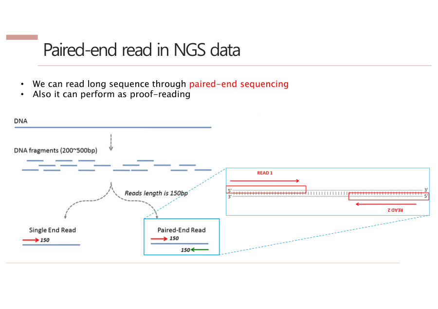

Depth · 어디를 읽을까
이 장에서 배울 것 — DNA를 읽은 뒤 "얼마나 많이, 얼마나 넓게 읽혔나"를 재는 두 숫자(depth, coverage), 어디를 얼마나 읽을지 고르는 세 가지 방법(WGS·WES·Targeted), 그리고 조각을 양쪽에서 읽는 페어드엔드와 조각에 붙이는 꼬리표(라이브러리)예요. 교수님이 거의 매 시간 반복한 부분이라 시험에 나올 가능성이 아주 높아요.
1. 먼저 용어 4개
DNA를 읽는 기계(NGS 시퀀서)는 DNA를 아주 짧게 토막 내서 읽어요. 이때 읽은 토막 하나를 read(리드, 읽은 조각)라고 불러요.
이 조각들에 대해 숫자 4개를 물어보는 게 이 장의 시작이에요.
| 용어 | 쉬운 뜻 |
|---|---|
| Read 수 | 읽은 조각이 모두 몇 개인가 |
| Read length | 조각 하나의 길이 (Illumina 기계는 약 150글자) |
| Depth (깊이) | 한 자리를 조각 몇 개가 겹쳐서 읽었나. 5개가 겹치면 5x |
| Coverage (덮은 비율) | 전체 중 한 번이라도 읽힌 자리의 비율. 10%가 비었으면 90% |
책 한 권을 여러 친구에게 나눠서 읽게 했다고 해 보세요. 어떤 줄은 친구 5명이 읽었고, 어떤 줄은 아무도 안 읽었어요.
한 줄을 몇 명이 읽었나가 depth, 책 전체 중 적어도 한 명이 읽은 줄의 비율이 coverage예요.
왜 둘을 따로 재냐면, 조각이 많아도 한쪽에만 몰려 있을 수 있기 때문이에요. 많이 읽었는지(depth)와 골고루 읽었는지(coverage)는 서로 다른 이야기예요.
Depth는 한 위치를 몇 개의 read가 겹쳐 읽었는지(예 30x)를 뜻하고, coverage는 레퍼런스 전체 중 한 번이라도 읽힌 비율(예 99%)을 뜻한다.
잠깐 확인 — "5x"와 "90%" 중 depth는 어느 쪽일까요?
"5x"가 depth예요. x는 "몇 번 읽었나"를 세는 단위이고, %는 "전체 중 얼마나 읽혔나"를 말하는 coverage예요.
2. 그림으로 보기
아래 표는 DNA 14자리를 조각 6개가 읽은 모습이에요. 맨 윗줄은 자리 번호, 둘째 줄 "정답지"는 표준 게놈(레퍼런스)의 글자예요.
조각1~6은 각 조각이 정답지의 어느 자리에 붙었는지를 보여 줘요. 파란 칸은 정답과 같은 글자, 붉은 칸과 노란 칸은 정답과 다른 글자예요. 맨 아랫줄 숫자가 그 자리의 depth예요.
| 자리 | 1 | 2 | 3 | 4 | 5 | 6 | 7 | 8 | 9 | 10 | 11 | 12 | 13 | 14 |
| 정답지 | A | T | G | C | C | A | T | T | G | A | C | G | T | A |
| 조각1 | A | T | G | C | C | |||||||||
| 조각2 | T | G | C | C | A | |||||||||
| 조각3 | G | C | C | G | T | T | ||||||||
| 조각4 | C | C | G | T | T | G | ||||||||
| 조각5 | C | G | T | T | C | |||||||||
| 조각6 | T | T | G | A | C | |||||||||
| depth | 1 | 2 | 3 | 4 | 5 | 4 | 4 | 4 | 3 | 1 | 1 | 0 | 0 | 0 |
세 군데만 눈여겨보세요.
- 6번 자리 — 읽은 조각 4개 중 3개가 G예요(정답지는 A). 여러 조각이 똑같이 말하니까 진짜 변이일 가능성이 높아요.
- 9번 자리 — 읽은 조각 3개 중 1개만 C예요(정답지는 G). 혼자 다른 말을 하니까 기계가 실수한 것(시퀀싱 에러)일 가능성이 높아요.
- 12~14번 자리 — 아무도 읽지 않았어요(depth 0). 이게 coverage 구멍이에요. 14자리 중 11자리만 읽혔으니 coverage는 약 79%예요.
"변이"는 사람마다 다른 DNA 글자(정답지와 다른 글자)를 말해요. 변이를 찾는 게 이 수업의 최종 목표라서, 진짜 변이와 기계 실수를 가려내는 일이 중요해요.
잠깐 확인 — 12번 자리의 depth는 얼마이고, 이런 자리를 뭐라고 부를까요?
depth는 0이고, 아무 조각도 닿지 않은 "coverage 구멍"이에요. 이런 자리가 많을수록 coverage가 낮아져요.
3. 왜 depth가 높아야 할까 — 투표 비유
depth는 "투표에 참여한 사람 수"예요. 100명(100x)에게 물었는데 1명만 "T"라고 했다면, 그 1명이 잘못 본 거예요. 99명이 같은 말을 했으니까요.
그런데 2명(2x)에게 물었는데 1명은 A, 1명은 T라고 하면 어느 쪽이 맞는지 알 수 없어요. 판단 불가예요.
정리하면 depth가 높을수록 변이 판정이 정확해요. 조각 하나가 틀려도 나머지 조각들이 바로잡아 주기 때문이에요.
반대로 depth를 너무 낮게 잡으면 어떤 자리는 20번, 어떤 자리는 0번처럼 들쭉날쭉해져요. 0번인 자리가 생기면 coverage도 떨어져요. 그래서 연구자들은 "depth 100x, coverage 95%를 원한다"처럼 목표를 정하고 시퀀싱을 맡겨요. 다만 많이 읽을수록 돈이 더 들어요.

Depth가 높을수록 한 read의 에러를 다른 read들이 보완해 진짜 변이와 시퀀싱 에러를 구분할 수 있다. 예를 들어 100x에서 하나만 다르면 에러로 걸러 내지만, 2x에서 하나가 다르면 판단할 수 없다. Depth가 너무 낮으면 안 읽힌 영역이 생겨 coverage도 떨어진다.
잠깐 확인 — 어떤 자리를 2번만 읽었더니 A 하나, T 하나였어요. 왜 변이라고 말할 수 없을까요?
2명 중 1명씩 다른 말을 하면 누가 맞는지 알 수 없어서 "진짜 변이"인지 "기계 실수"인지 가릴 수 없기 때문이에요. depth가 낮아서 생기는 문제예요.
4. depth 계산식
depth는 "읽은 글자를 전부 더한 양"을 "게놈 전체 글자 수"로 나눈 값이에요. 전체 벽 넓이에 비해 페인트를 몇 겹 칠했느냐와 같은 생각이에요.
6억 × 150은 읽은 글자 총합(900억 글자)이고, 이를 사람 게놈 30억 글자로 나누면 평균 30번씩 읽었다는 뜻이에요.
7주차 실습 결과는 coverage 99%, 평균 depth 약 20x였어요. 교수님이 "얼라인 결과에서 궁금한 건 결국 coverage와 depth 두 가지"라고 정리하셨어요.
잠깐 확인 — read 3억 개, 길이 150, 게놈 30억 글자이면 depth는?
3억 × 150 ÷ 30억 = 15x예요. 읽은 글자 450억 개를 30억으로 나눈 값이에요.
5. WGS · WES · Targeted — 어디를 읽을까
기계가 한 번에 읽을 수 있는 양은 정해져 있어요. 그래서 "어디를 읽을지"를 정해야 하고, 범위를 정하면 depth가 따라서 정해져요.
페인트 한 통으로 넓은 벽을 칠하면 얇게, 좁은 벽을 칠하면 두껍게 칠해져요. 칠의 두께가 depth예요.
교수님은 이걸 "선택과 집중"이라고 하셨어요.
| 종류 | 읽는 범위 | Depth | 쓰임 |
|---|---|---|---|
| WGS Whole Genome Sequencing | 전체 게놈 (30억 글자) | ~30x | 큰 그림, 처음 보는 변이 찾기(de novo) |
| WES Whole Exome Sequencing | 엑손만 (약 2만 유전자) | 50~100x | 단백질에 관한 변이, 돈 절약 |
| Targeted (gene panel) | 특정 유전자 10~500개 | 500x↑ 암 조기진단 ~3000x | 아주 적은 비율의 변이(Low VAF), 병원 암 진단 |
낯선 말을 풀어 볼게요.
- 엑손(exon) — 유전자 중에서 실제로 단백질을 만드는 설계도 부분이에요. 엑손을 모아 놓은 것이 엑솜(exome)이에요. 나머지 부분(인트론)은 읽지 않으니 돈이 덜 들어요.
- de novo(데 노보) — 라틴어로 "처음부터, 새로"라는 뜻이에요. 부모에게 없던 새 변이, 처음 보는 변이를 말해요.
- Low VAF — 변이를 가진 DNA가 아주 적은 비율만 섞여 있는 상태예요(VAF는 변이 DNA의 비율).
왜 암 조기진단은 3000x나 읽을까요? 초기 암이면 피 속 DNA 중 암에서 나온 DNA가 약 1%뿐이에요. 100번 읽어서는 1번 나올까 말까 해서 에러와 구분이 안 돼요. 아주 많이 읽어야 그 1%가 진짜로 잡혀요.
숫자(30x, 50~100x, 500x↑)는 "정해진 규칙"이 아니라 대표적인 예시라고 교수님이 말씀하셨어요. 시험에서는 이 숫자들로 쓰면 돼요.

기기 처리량이 정해져 있어서 범위를 넓히면 depth가 얕아지고 좁히면 깊어진다. WGS는 전체 게놈을 약 30x로 읽어 큰 그림과 새 변이(de novo) 탐색에 쓰고, WES는 단백질을 만드는 엑손만 50~100x로 읽어 비용을 아낀다. Targeted sequencing은 특정 유전자만 500x 이상(암 조기진단 약 3000x)으로 읽어 비율이 낮은 변이(Low VAF)를 잡으며 임상 암 진단에 많이 쓴다.
넓을수록 얇고(WGS 30x), 좁을수록 두껍다(Targeted 500x↑). 범위 → depth 순서로 30 → 50~100 → 500 이에요.
잠깐 확인 — 같은 기계로 WGS와 Targeted를 각각 돌리면 어느 쪽 depth가 더 높을까요?
Targeted가 더 높아요. 읽을 범위가 훨씬 좁아서 같은 양의 "페인트"를 좁은 벽에 두껍게 칠하는 셈이기 때문이에요.
6. 싱글엔드 vs 페어드엔드
NGS 기계는 DNA 조각을 한쪽 끝에서 150~250글자까지밖에 못 읽어요. 이 한계를 넘으려는 방법이 페어드엔드예요.
긴 터널을 뚫을 때 한쪽에서만 파는 것보다, 양쪽 입구에서 동시에 파다가 가운데서 만나게 하면 더 빨리 길게 뚫을 수 있어요. 페어드엔드가 그 방식이에요.
- 싱글엔드 — 조각의 한쪽 끝에서만 읽어요.
- 페어드엔드(paired-end) — 조각의 양쪽 끝에서 각각 읽어요. 왼쪽에서 읽은 것이 R1(정방향, forward), 오른쪽에서 읽은 것이 R2(역방향, reverse)예요. 가운데 겹치는 부분(overlap, 약 50글자)으로 이어붙여요.
- 2×150 — 양쪽에서 150글자씩 읽었다는 표기예요. 파일 이름에 R1, R2가 붙어서 두 파일로 나와요.
계산해 보면 150 + 150 − 겹침 50 = 약 250글자짜리 조각을 통째로 알 수 있어요.
장점은 두 가지예요. 첫째, 더 길게 읽어요. 둘째, 읽다 보면 뒤로 갈수록 품질이 떨어지는데, 그 부분을 반대쪽에서 읽은 것이 보완(교정)해 줘요.

페어드엔드는 DNA 조각의 양 끝에서 각각 읽어(R1, R2) 겹치는 부분으로 합치는 방식이다. 더 긴 서열을 읽을 수 있고, 뒤로 갈수록 떨어지는 품질을 반대쪽 read가 보완한다는 장점이 있다.
잠깐 확인 — 2×150으로 읽고 겹침이 50이면, 합친 조각은 대략 몇 글자일까요?
약 250글자예요. 150 + 150 = 300에서 겹친 50을 한 번 빼 주면 돼요.
7. 라이브러리 — 조각에 붙이는 꼬리표
여기서 라이브러리(library)는 도서관이 아니에요. DNA를 기계에 넣어 읽을 수 있게 손질해서 부품을 붙여 놓은 준비물을 말해요.
읽고 싶은 DNA 조각 앞뒤에 아래 부품들을 붙여요. 바깥쪽부터 안쪽 순서는 어댑터 → 바코드 → 프라이머 → 인서트예요.
| 부품 | 하는 일 |
|---|---|
| 어댑터 (adapter) | 기계의 유리판(flow cell)에 DNA를 붙이는 손잡이. 페어드엔드로 양쪽을 읽으려고 양 끝에 있어요 |
| 바코드 (barcode) | 샘플마다 다른 짧은 글자열로 된 이름표 |
| 프라이머 결합부 (primer) | 글자 읽기가 시작되는 자리 |
| 인서트 (insert) | 우리가 진짜로 읽고 싶은 분석 대상 DNA |
바코드가 왜 중요할까요? 기계 한 번에 나오는 read가 엄청 많아서(약 10억 개 수준) 한 사람 샘플만 돌리면 대부분이 낭비돼요.
그래서 여러 사람의 샘플을 바코드로 구분해서 섞어 한 번에 돌리고, 나중에 이름표(바코드)로 사람별로 나눠요. 이러면 비용이 사람 수(n)만큼 나뉘어 1/n이 돼요.
택시를 혼자 타면 요금이 비싸지만 친구 여러 명과 같이 타면 n분의 1이 되는 것과 같아요. 짐에 이름표를 붙여 두면 내릴 때 각자 짐을 찾을 수 있고요.
라이브러리는 인서트의 양 끝에 어댑터, 샘플 바코드, 프라이머 결합부가 붙은 구조다. 바코드로 여러 샘플을 섞어 한 번에 시퀀싱하고 나중에 구분할 수 있어 비용을 1/n로 줄인다.
잠깐 확인 — 샘플 10개를 바코드로 섞어 돌리면 한 샘플당 비용은 대략 얼마가 될까요?
대략 1/10이에요. 기계 한 번의 비용을 샘플 수(n=10)로 나눠 쓰기 때문이에요.
- Depth = 한 자리를 몇 번 읽었나(5x), coverage = 전체 중 몇 %가 읽혔나(90%). Depth 계산은 read 수 × 길이 ÷ 게놈 길이이고, 높을수록 진짜 변이와 에러를 잘 가려요.
- WGS ~30x(전체), WES 50~100x(엑손만), Targeted 500x↑(특정 유전자, 암 조기진단 ~3000x)이고 범위를 좁힐수록 depth가 깊어져요(선택과 집중).
- 페어드엔드는 양쪽에서 읽어(R1/R2, 2×150, 겹침 ~50) 더 길게 읽고 품질도 보완해요. 라이브러리의 바코드 덕분에 샘플을 섞어 돌려 비용이 1/n이에요.